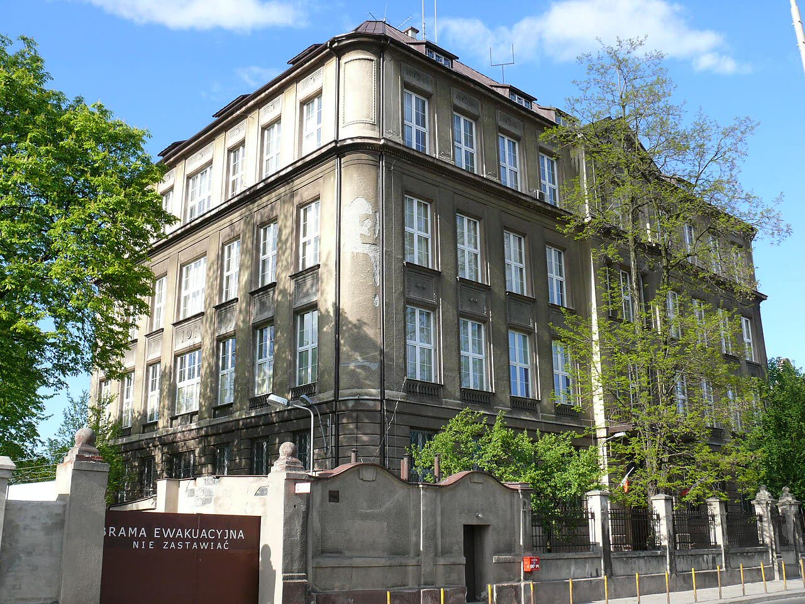

Polonia, arrestati due ucraini: sospettati di spiare e sabotare per Mosca
Il coro regge
Tutto viene dal controspionaggio e dalla procura: i servizi polacchi fanno il loro mestiere, ma finché non c'è un processo sono sospettati, non colpevoli.
Redazione Contrappunto · aggiornato il 10.11.2026


Martedì 10 novembre il ministro coordinatore dei servizi speciali polacchi, Tomasz Siemoniak, e l'ABW (l'Agenzia per la sicurezza interna, il controspionaggio polacco) hanno annunciato l'arresto di due cittadini ucraini di 24 e 25 anni. Sarebbero stati fermati il 3 novembre a Mińsk Mazowiecki, vicino a Varsavia, e un giudice li ha messi in carcere per tre mesi. Sono sospettati di spionaggio e sabotaggio per conto dei servizi russi. Attenzione a non confonderli con i sei fermati annunciati il 5 novembre: è un'altra inchiesta, su un altro gruppo (cinque polacchi e una russa) accusato di rifornire di materiale militare la Russia.
Vedi di più: 4 parole spiegate, cosa si racconta
Cosa si raccontaPer ABW, procura e ministro i due avrebbero fotografato per la Russia impianti militari e infrastrutture critiche in tutta la Polonia, avrebbero dato fuoco a dei veicoli e sarebbero stati pagati, anche in criptovalute. Prima degli incendi avrebbero cambiato le targhe delle auto con altre simili a quelle dell'esercito ucraino: per l'ABW potrebbe essere servito a far cadere i sospetti sull'Ucraina. TVN24, Niezależna e Wirtualna Polska riportano la stessa versione, ricavata dal comunicato dell'ABW e dal post di Siemoniak su X. I due sono sospettati: nessuna sentenza. [Agencja Bezpieczeństwa Wewnętrznego (ABW)] [TVN24] [Niezależna] [Wirtualna Polska]
- ABW
- Agencja Bezpieczeństwa Wewnętrznego, l'agenzia polacca per la sicurezza interna: fa controspionaggio e contrasto al terrorismo; risponde al governo (ABW).
- Siemoniak
- Tomasz Siemoniak è il ministro coordinatore dei servizi speciali nel governo di Donald Tusk: sovrintende ai servizi e ne annuncia le operazioni (ABW, Niezależna).
- Misura cautelare «tymczasowe aresztowanie»
- Carcerazione preventiva decisa da un giudice prima del processo, qui per tre mesi: non è una condanna (ABW).
- Articolo 130 del codice penale polacco
- Norma su spionaggio e atti di sabotaggio per conto di un servizio straniero: la pena va da 10 anni all'ergastolo (ABW).
- L'ABW ha fermato il 3 novembre a Mińsk Mazowiecki due ucraini di 24 e 25 anni, sospettati di spiare e sabotare per la Russia; il giudice li ha messi in carcere per tre mesi (ABW, TVN24).
- Sono un'inchiesta diversa dai sei fermati del 5 novembre (cinque polacchi e una russa), accusati di fornire materiale militare alla Russia (ABW, OKO.press).
TVN24 (centro-sinistra), Niezależna (destra, vicina al PiS) e Wirtualna Polska (centro) raccontano la stessa storia, quasi parola per parola: è il comunicato dell'ABW, con il post di Siemoniak. Nessuna ha altre fonti, ed è normale: le prove non sono pubbliche. Anche il movente delle targhe è un'ipotesi dell'ABW, non un fatto provato. Noi non la ripetiamo come certa. I servizi polacchi sembrano fare il loro mestiere, ma sono due sospettati, non due colpevoli. E non c'entrano i sei del 5 novembre: sono un'altra inchiesta. [1] [2] [3] [4] [6]
La verifica punto per punto3 passaggi, 6 fonti
Qui sotto ogni cosa scritta sopra, una per una, con le fonti. Confermato: lo dice un documento originale o più fonti lette. Plausibile: lo riportano fonti serie, ma non abbiamo letto l'originale. Discordante: le fonti danno numeri diversi, e diciamo quali. Ipotesi e Opinione sono il nostro ragionamento, separato dai fatti.
Chi è stato fermato e cosa si dice
L'ABW ha comunicato il 10 novembre che le persone sono due cittadini ucraini: li hanno fermati il 3 novembre a Mińsk Mazowiecki gli agenti della delegatura di Łódź, che hanno perquisito i luoghi dove stavano e trovato supporti di dati e stupefacenti (ABW, TVN24). Il 4 novembre la procura nazionale di Łódź ha aperto l'inchiesta; il procuratore ha contestato spionaggio per un servizio straniero e atti di sabotaggio (art. 130 del codice penale: da 10 anni all'ergastolo) e il giudice ha disposto il carcere per tre mesi (ABW). Per l'ABW avrebbero individuato obiettivi militari e infrastrutture critiche in tutto il Paese, avrebbero dato fuoco a dei veicoli dopo averne cambiato le targhe con altre simili a quelle dell'esercito ucraino, e sarebbero stati pagati, anche in criptovalute (ABW, TVN24). Siemoniak ha scritto su X: «Mężczyźni rozpoznawali i robili zdjęcia obiektom infrastruktury krytycznej i wojskowej na terenie Polski» (Niezależna). Per l'ABW le targhe «mógł mieć na celu» (potrebbero aver avuto lo scopo di) deviare i sospetti sull'Ucraina; per il portavoce della procura, Przemysław Nowak, il sabotaggio aveva lo scopo di alimentare sentimenti antiucraini (Wirtualna Polska).
Non è lo stesso caso dei sei
Il 5 novembre l'ABW aveva annunciato un'altra inchiesta: sei fermati (cinque polacchi di 25-52 anni e una russa di 37), di cui quattro in carcere per tre mesi con l'accusa di spionaggio e due con misure non detentive; per l'ABW avrebbero fornito alla Russia componenti militari usati per munizioni e armi. Le perquisizioni erano state 21, dal 21 ottobre al 2 novembre, in tre voivodati. L'inchiesta è della procura di Białystok e delegatura ABW di Olsztyn (ABW, OKO.press). I due ucraini non sono tra questi.
Il nostro punto
Le notizie sono precise e a darle sono i servizi: la Polonia ha organi di sicurezza che funzionano, e questo conta. Ma finora è solo la parola di chi accusa, che ha anche interesse a mostrare di agire. Due ucraini accusati non dicono niente sugli ucraini in Polonia; e il movente delle targhe resta una congettura dell'ABW. Aspettiamo che un giudice veda le prove: fino ad allora sono due sospettati, non due colpevoli.
Fonti6, tutte con il link
- ABW zatrzymała dwóch podejrzanych o szpiegostwo i dywersję na rzecz Rosji (10 novembre 2026) (Agencja Bezpieczeństwa Wewnętrznego (ABW)) · consultata il 10.11.2026
- ABW zatrzymała dwóch obywateli Ukrainy. Są podejrzani o szpiegostwo na rzecz Rosji (10 novembre 2026) (TVN24) · consultata il 10.11.2026
- ABW zatrzymało dwóch obywateli Ukrainy. Podejrzani o szpiegostwo na rzecz rosyjskich służb (10 novembre 2026, PAP) (Niezależna) · consultata il 10.11.2026
- Mieli działać dla Rosji. ABW zatrzymała dwóch mężczyzn (10 novembre 2026) (Wirtualna Polska) · consultata il 10.11.2026
- ABW uderza w grupę działającą na rzecz rosyjskiego wywiadu. Sześć osób zatrzymanych (5 novembre 2026) (Agencja Bezpieczeństwa Wewnętrznego (ABW)) · consultata il 10.11.2026
- Sześć osób zatrzymanych za szpiegostwo na rzecz Rosji (5 novembre 2026) (OKO.press) · consultata il 10.11.2026
Testo preparato con strumenti di intelligenza artificiale e pubblicato senza revisione umana. Come lavoriamo